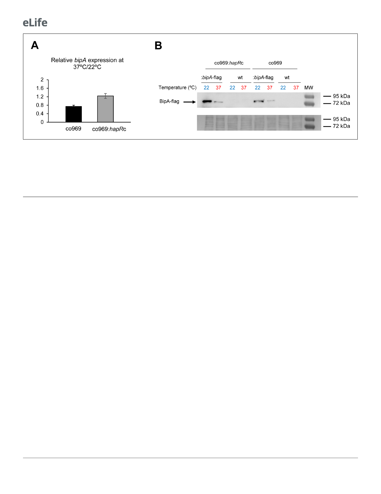

Research article
Microbiology and Infectious Disease
Figure 4. BipA protein levels are elevated at 22˚C. (A) Relative bipA transcript levels in Vibrio cholerae co969:bipA-flag or co969:hapRc:bipA-flag
strains, carrying a chromosomal bipA-flag fusion, between rugose colonies grown at 37˚C (37R) and smooth colonies grown at 22˚C (22 Sb), determined
by quantitative real-time polymerase chain reaction. Data are the average of three biological replicates, each containing eight colonies pooled
together. Error bars, standard deviation. (B) Representative Western blot showing BipA-flag (68.18 KDa) protein levels of co969:bipA-flag or co969:
hapRc:bipA-flag rugose colonies grown at 37˚C (37R) and smooth colonies grown at 22˚C (22 Sb). BipA-flag bands migrated close to the 72 KDa band
of the protein ladder. co969 and co969:hapRc strains were used as negative controls. The Coomassie staining of the membrane, used as a loading
control, is shown.
screening for aberrantly smooth co969 colonies at 37˚C identified the protease LonA, which has pre-
viously been reported to participate in biofilm regulation, as a potential repressor of BipA activity
(Supplementary file 1 – Supplementary Figure 5; Supplementary file 7; Rogers et al., 2016). Dele-
tion of VC1920 (lonA) in co969 led to the formation of smooth colonies at both 37˚C and 22˚C
(Supplementary file 1 – Supplementary Figure 5B), and overexpression of lonA resulted in increased
rugosity at both temperatures (Supplementary file 1 – Supplementary Figure 5C). However, BipA
protein levels were unchanged in the DlonA background (Supplementary file 1 – Supplementary
Figure 5D), suggesting that the effect of LonA in biofilm formation does not involve BipA. Accord-
ingly, deletion of lonA in the co969 DbipA background also resulted in smooth colonies at all tem-
peratures, and overexpression of lonA in co969 DbipA further increased rugosity
(Supplementary file 1 – Supplementary Figure 5B and C). These data show that LonA regulates bio-
film-associated colony morphology in V. cholerae, but likely in a BipA-independent manner.
BipA contributes to 50S subunit assembly in V. cholerae
In E. coli, BipA is thought to act as a ribosome assembly factor, facilitating 50S subunit biogenesis at
suboptimal temperatures (Choi et al., 2019; Choudhury and Flower, 2015; Gibbs et al., 2020;
Krishnan and Flower, 2008). We reasoned that the role of BipA in V. cholerae colony morphology
development might be related to ribosome biogenesis and/or homeostasis. To test this, we pre-
pared lysates from control and DbipA cells grown at different temperatures and subjected them to
sucrose gradient sedimentation analysis. We found that cells grown at 22˚C and lacking BipA had
increased proportions of subunit particles (Figure 5). The 50S peak also exhibited a shoulder of
slower-migrating particles. At 37˚C, no differences were observed between control and mutant
strain. These data are consistent with a modest 50S assembly defect at low temperature, similar to
that reported for E. coli (Gibbs et al., 2020).
BipA influences translation at lower temperatures
To investigate the role of BipA in control of biofilm component genes and colony morphology, we
performed global proteomic analyses of co969 WT and DbipA grown at either 37˚C or 22˚C followed
by four comparative analyses: (i) WT vs. DbipA at 37˚C, (ii) WT vs. DbipA at 22˚C colonies, (iii) WT 37
vs. 22˚C colonies, and (iv) DbipA 37 vs. 22˚C colonies. The proteomic analyses identified 1639 (43%)
of 3783 known V. cholerae proteins, out of which 695 were significantly differentially abundant
(Supplementary file 8).
8 of 23